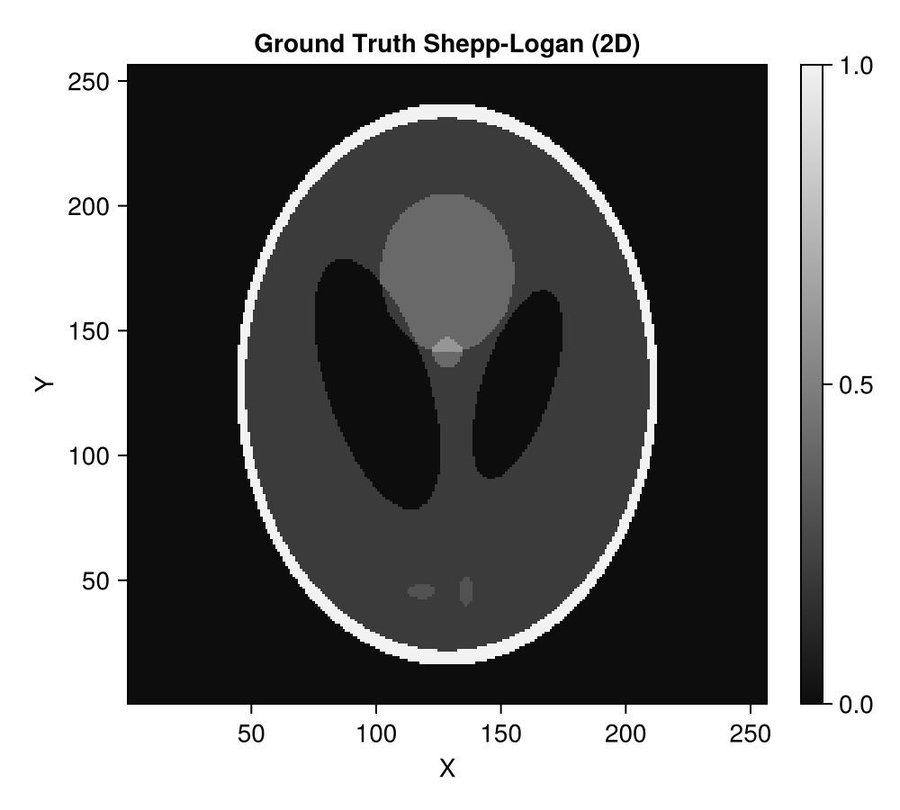
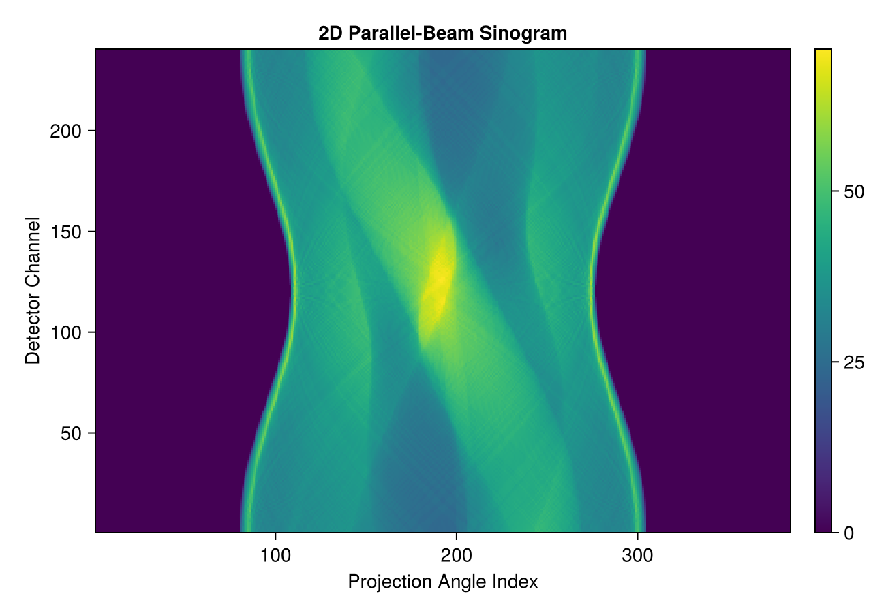
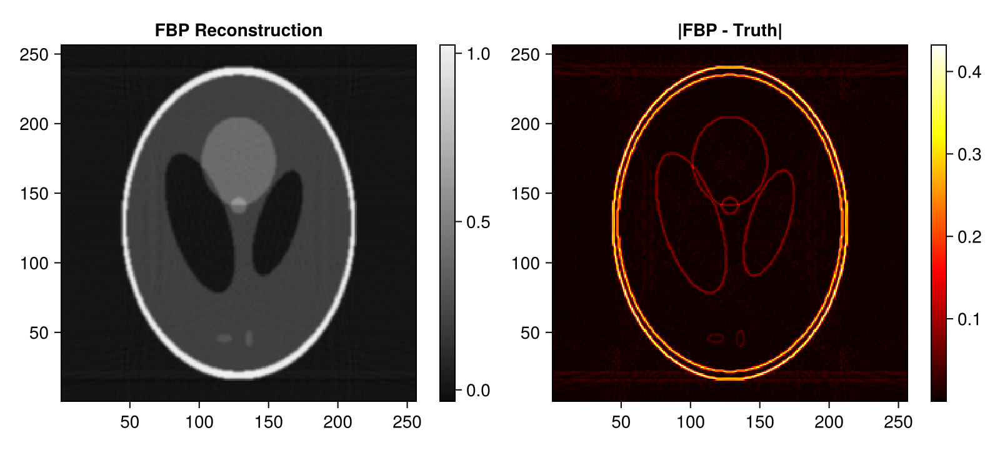
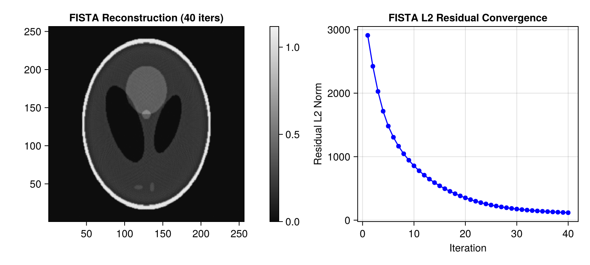
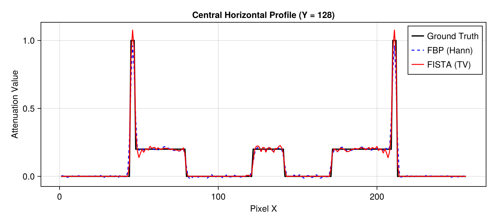

2D Parallel-Beam CT Demo with Tigre.jl
This tutorial demonstrates a complete 2D parallel-beam computed tomography (CT) workflow:
- Generating a standard Shepp-Logan 2D phantom using Tigre.jl's built-in
shepp_logan_3d. - Configuring a 2D parallel-beam Geometry in Tigre.jl.
- Simulating forward projection (Radon transform) using
Ax. - Performing direct reconstruction using Filtered Backprojection (
fbp). - Performing iterative reconstruction using Fast Iterative Shrinkage-Thresholding Algorithm (
fista) with Total Variation (TV) regularization. - Comparing reconstruction accuracy and profile slices.
Relevant Functions Used
Tigre.shepp_logan_3d: Generates analytical Shepp-Logan ellipsoidal phantoms.Tigre.Geometry: Defines physical scanner parameters and acquisition trajectory.Tigre.Ax: Computes forward projection line integrals on GPU.Tigre.fbp: Direct Filtered Backprojection for parallel-beam geometry.Tigre.fista: Accelerated proximal gradient method with Total Variation (TV) denoising.
Prerequisites
This tutorial uses Makie (recommended backend: CairoMakie) for visualization. If CairoMakie is not installed in your environment, add it by running using Pkg; Pkg.add("CairoMakie").
using LinearAlgebra
using CairoMakie
using Tigre1. Synthetic Phantom Generation (Built-in shepp_logan_3d)
Tigre.jl includes a native analytical Shepp-Logan phantom generator (shepp_logan_3d). To obtain a 2D slice, we generate a 3D phantom of size $N \times N \times N$ and extract an off-center axial slice ($Z = 3N/8$). Since Tigre's internal CUDA operators work with 3D coordinate tensors (nx, ny, nz), the 2D image is reshaped into (N, N, 1) with geometry voxel size (N, N, 1).
N = 256
# Generate analytical 3D Shepp-Logan phantom and extract off-center axial slice ($Z = 3N/8$)
vol_3d_full = shepp_logan_3d(N; phantom_type = :yu_ye_wang)
phantom_2d = vol_3d_full[:, :, 3 * N ÷ 8]
# Reshape into (N, N, 1) for Tigre.jl
vol_phantom = reshape(phantom_2d, N, N, 1)
println("Phantom 2D size: ", size(phantom_2d))
println("Attenuation range: [", minimum(phantom_2d), ", ", maximum(phantom_2d), "]")
plotImg(phantom_2d; title = "Ground Truth Shepp-Logan (2D)", figure_size = (500, 450))
Phantom 2D size: (256, 256)
Attenuation range: [-1.4901161e-8, 1.0]
2. Geometry Setup (2D Parallel-Beam)
In parallel-beam mode:
mode = :parallel: Parallel x-ray beam geometry.angles: Array of rotation angles covering $[0, \pi]$ radians (180 degrees).nVoxel = (N, N, 1): Volume grid with 1 slice in Z.nDetector = (nDet, 1): Linear 1D detector with 1 row in V.DSOandDSD: Set equal (1000f0) to keep the scale factor neutral.
n_angles = 240
angles = Float32.(range(0, pi, length=n_angles))
n_det = 384 # Number of detector channels
geo = Geometry(
mode = :parallel,
angles = angles,
nVoxel = (N, N, 1),
sVoxel = (Float32(N), Float32(N), 1.0f0),
nDetector = (n_det, 1),
sDetector = (Float32(n_det), 1.0f0),
DSO = 1000.0f0,
DSD = 1000.0f0,
)
println("Geometry configured:")
println(" Volume size: ", volume_size(geo))
println(" Projection size: ", projection_size(geo))
Geometry configured:
Volume size: (256, 256, 1)
Projection size: (384, 1, 240)3. Forward Projection (Ax)
Ax calculates the line integrals through the volume along parallel rays. The resulting array has dimensions (nDetector, 1, nAngles).
# Compute forward projection using native GPU Siddon ray-tracer
projections = Ax(vol_phantom, geo)
# Squeeze out the singleton detector V dimension to display the 2D sinogram (channels x angles)
sinogram = dropdims(projections, dims=2)
println("Sinogram dimensions (Channels x Angles): ", size(sinogram))
fig = Figure(size = (650, 450))
ax = Axis(fig[1, 1], title = "2D Parallel-Beam Sinogram", xlabel = "Projection Angle Index", ylabel = "Detector Channel")
hm = heatmap!(ax, sinogram, colormap = :viridis)
Colorbar(fig[1, 2], hm)
figSinogram dimensions (Channels x Angles): (384, 240)
4. Direct Reconstruction with FBP (fbp)
Filtered Backprojection (fbp) is the standard analytical direct inversion method for parallel-beam CT. We apply a Hann windowed ramp filter (filter = :hann) to control high-frequency noise.
# Filtered Backprojection
rec_fbp_3d = fbp(projections, geo; filter = :hann)
# Drop singleton Z dimension to obtain (N, N) image
rec_fbp = dropdims(rec_fbp_3d, dims=3)
# Display reconstruction and difference image
fig = Figure(size = (800, 360))
ax1 = Axis(fig[1, 1], title = "FBP Reconstruction", aspect = DataAspect())
hm1 = heatmap!(ax1, rec_fbp, colormap = :grays)
Colorbar(fig[1, 2], hm1)
ax2 = Axis(fig[1, 3], title = "|FBP - Truth|", aspect = DataAspect())
hm2 = heatmap!(ax2, abs.(rec_fbp .- phantom_2d), colormap = :hot)
Colorbar(fig[1, 4], hm2)
fig
5. Iterative Reconstruction with FISTA (fista)
Fast Iterative Shrinkage-Thresholding Algorithm (fista) minimizes the least-squares data fidelity term with Total Variation (TV) regularization: $\min_x \frac{1}{2} \|Ax - b\|_2^2 + \lambda \operatorname{TV}(x) \quad \text{s.t.} \quad x \ge 0$
tviter: Number of inner gradient descent steps for TV denoising (default: 20).tvlambda: TV regularization strength.nonneg = true: Enforces physical non-negativity.return_history = true: Collects residual norm $\|Ax - b\|_2$ per iteration.
# =============================================================================
# Estimation of FISTA Lipschitz Hyperparameter (`hyper`)
#
# FISTA (Fast Iterative Shrinkage-Thresholding Algorithm) relies on proximal gradient descent.
# Its gradient step size is proportional to 1 / hyper, where hyper represents the Lipschitz
# constant L ≈ ||Aᵀ A||₂ (the spectral radius of the forward-backward projection operator).
#
# If `hyper` is left to the default fallback value, the gradient step size can be drastically
# mismatched (e.g. orders of magnitude too conservative), leading to poor reconstruction quality
# and near-zero convergence.
#
# We explicitly estimate `fista_hyper` beforehand using the SVD power method via `estimate_hyper(geo)`.
# Storing it in an explicit variable before calling `fista` makes the parameter calibration step
# transparent and easily verifiable, emphasizing the critical importance of proper operator norm scaling.
# =============================================================================
fista_hyper = estimate_hyper(geo)
println("Estimated FISTA Lipschitz hyperparameter: ", fista_hyper)
Estimated FISTA Lipschitz hyperparameter: 124590.15# Run 40 iterations of FISTA
niter = 40
rec_fista_3d, hist = fista(
projections,
geo,
niter;
hyper = fista_hyper,
tviter = 10,
tvlambda = 0.05f0,
nonneg = true,
return_history = true,
compute_l2 = true,
)
rec_fista = dropdims(rec_fista_3d, dims=3)
fig = Figure(size = (800, 360))
ax1 = Axis(fig[1, 1], title = "FISTA Reconstruction ($niter iters)", aspect = DataAspect())
hm1 = heatmap!(ax1, rec_fista, colormap = :grays)
Colorbar(fig[1, 2], hm1)
ax2 = Axis(fig[1, 3], title = "FISTA L2 Residual Convergence", xlabel = "Iteration", ylabel = "Residual L2 Norm")
scatterlines!(ax2, 1:length(hist.residual_l2), hist.residual_l2, color = :blue)
fig
6. Comparison and Profile Analysis
We compare horizontal 1D profile slices through the center of the phantom ($Y = N/2$).
mid_y = N ÷ 2
fig = Figure(size = (800, 360))
ax = Axis(fig[1, 1], title = "Central Horizontal Profile (Y = $mid_y)", xlabel = "Pixel X", ylabel = "Attenuation Value")
lines!(ax, phantom_2d[:, mid_y], label = "Ground Truth", linewidth = 2, color = :black)
lines!(ax, rec_fbp[:, mid_y], label = "FBP (Hann)", linewidth = 1.5, linestyle = :dash, color = :blue)
lines!(ax, rec_fista[:, mid_y], label = "FISTA (TV)", linewidth = 1.5, color = :red)
axislegend(ax, position = :rt)
fig
Summary
- FBP: Fast and accurate with full angular coverage; sensitive to noise and high-frequency filtering parameters.
- FISTA: Produces piecewise-smooth, noise-reduced reconstructions by incorporating Total Variation prior and non-negativity constraints.